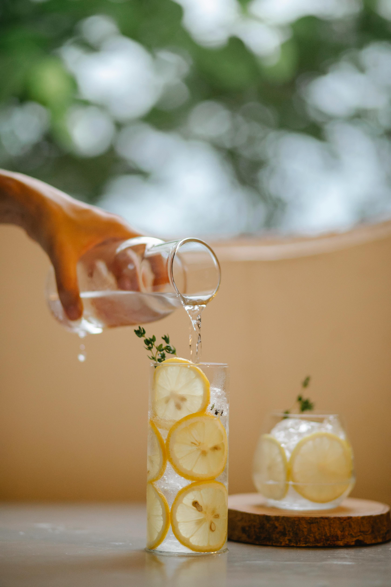

Easy & Refreshing Lemonade

Photo by Charlotte May
Description
This simple classic hits the spot every time. When you nail the basics, even something as easy as lemonade can turn into a luxurious treat. Use this recipe as a base and add your own spin on it with garnishes, flavors, and mix-ins.
Ingredients
- 5 large lemons
- 1 cup simple syrup
- 5 cups water
- A pinch of salt
- Optional: Berries, mint leaves, rosemary sprigs, and whatever might sound like a good addition for your tastes!
Steps to Prepare
- Juice lemons into a large pitcher.
- Add simple syrup and mix well.
- Add water, stirring as you do.
- Chill for 1-2 hours before serving.
- Serve over ice and with garnishes, if using them.
HOME